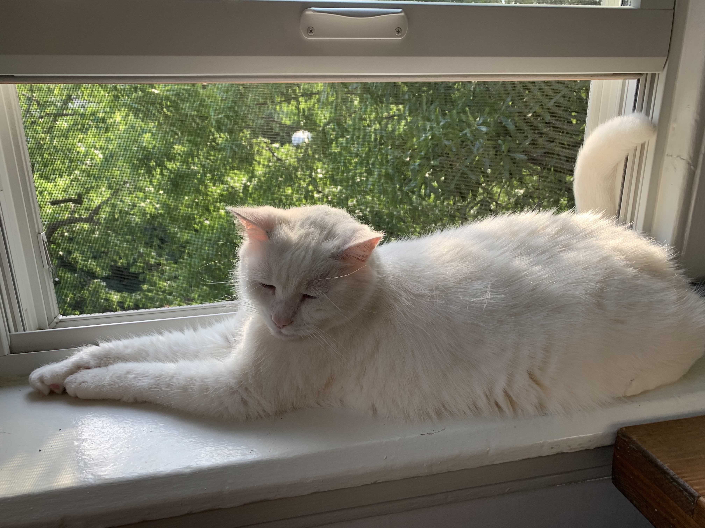

Bio
Sweetie Boy (aka Mr. Sweetie) is 14 years old and loves pets. Mr. Sweetie was once a wild cat and you'd know. SB loves snuggling on a pillow with his sister and getting pets from his mom and dad.
Likes
- screaming while playing with toy mice
- naps with Mom
- boxes
- windows
Disikes
- being crated
- strangers